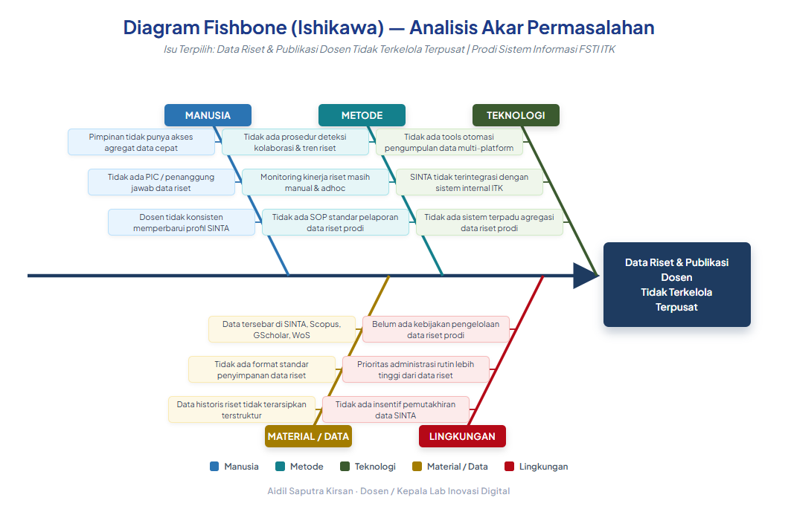

A. Identifikasi & Penetapan Isu Terpilih
1. Latar Belakang Isu
Sebagai bagian dari rangkaian Pelatihan Dasar (Latsar) Calon Pegawai Negeri Sipil (CPNS), setiap
peserta diwajibkan untuk melaksanakan tahapan aktualisasi di unit kerja
masing-masing. Kegiatan ini bertujuan untuk mengimplementasikan serta mendarahdagingkan nilai-nilai
dasar ASN BerAKHLAK dan prinsip Smart ASN ke dalam pelaksanaan
tugas sehari-hari di lingkungan pekerjaan.
Institut Teknologi Kalimantan (ITK) merupakan perguruan tinggi negeri yang menaungi 3 (tiga)
fakultas. Salah satu fakultas tersebut adalah Fakultas Sains dan Teknologi Informasi
(FSTI) yang baru dibentuk pada tahun 2025. Mengingat usianya yang
masih sangat muda, dalam menjalankan tata kelola organisasi administrasi dan akademik, masih
terdapat beberapa permasalahan yang belum berjalan secara optimal dan menuntut penyelesaian segera.
Berdasarkan hasil pengamatan serta wawancara langsung dengan pimpinan FSTI ITK dan
Kepala Program Studi Sistem Informasi di lingkup Laboratorium Inovasi Digital yang
melayani tata kelola untuk dua program studi (Sistem Informasi dan Bisnis Digital),
teridentifikasi 3 (tiga) isu aktual yang didukung oleh fakta dan data
valid di lapangan,
antara lain:
- Pengelolaan Tugas Akhir/Skripsi Mahasiswa FSTI ITK Belum
Efektif dan Terstandar. Hal ini dibuktikan secara konkret dengan data
empiris di mana kelancaran administrasi pendaftaran dan penjadwalan sidang tugas
akhir
masih bertumpu pada penggunaan Google Form secara parsial per program studi,
serta belum adanya platform sistem terpadu yang dapat melacak status log bimbingan
maupun
riwayat dokumen secara utuh.
- Pengelolaan Data Riset dan Pengabdian Dosen di Lab
Inovasi Digital Belum Terpusat dan Teranalisis. Berdasarkan rekam data
valid hasil observasi sistem, didapati fakta bahwa seluruh riwayat publikasi dosen
murni hanya tersebar menyilang di platform eksternal (mencakup SINTA, Scopus, Google Scholar).
Prodi terkonfirmasi belum pernah memiliki fasilitas database agregasi internal untuk
menghitung metrik atau menarik laporan secara otomatis yang diperlukan untuk penyusunan borang
akreditasi.
- Umpan Balik Mahasiswa terhadap Layanan Akademik Belum Terkumpul Secara
Sistematis. Data valid keadaan di lapangan menunjukkan bahwa
metode evaluasi kepuasan layanan masih bersifat sporadis. Pengumpulan feedback
mengandalkan penyebaran kuesioner kertas (manual) yang pengisiannya tidak wajib dan datanya
berdiri sendiri tanpa adanya integrasi digital, sehingga rekapitulasi analisisnya sulit
diterbitkan secara berkala.
Secara khusus, kondisi pengelolaan data Tridharma di Prodi Sistem Informasi (SI) dan Prodi Bisnis Digital (Bisdig) saat ini masih sangat bergantung pada cara-cara manual dan tidak terintegrasi, sebagaimana teridentifikasi melalui observasi langsung dan wawancara dengan Kaprodi. Berikut gambaran kondisi lapangan yang terverifikasi:
| No |
Aktivitas |
Kondisi Prodi SI & Bisdig Saat Ini |
Cara/Metode yang Digunakan |
| 1 |
Pengumpulan data penelitian dosen |
Data tersebar di 3 platform berbeda (SINTA, Scopus, Google Scholar) — belum ada agregasi data internal di prodi |
Dikumpulkan manual satu per satu oleh admin/Kaprodi saat dibutuhkan |
| 2 |
Rekap data pengabdian masyarakat (pengmas) |
Tidak ada sistem pencatatan terpusat; data tersebar dan tidak terstruktur |
Dikumpulkan melalui WhatsApp, e-mail, atau Google Drive secara tidak terstruktur |
| 3 |
Persiapan borang akreditasi (DTPS/LKPS) |
Kalkulasi rasio DTPS dan data pendanaan riset disusun manual dari berbagai sumber yang tidak terpusat |
Disusun dari spreadsheet terpisah; proses panjang dan rawan kesalahan data |
| 4 |
Monitoring kinerja Tridharma dosen |
Tidak ada dashboard/sistem monitoring terintegrasi untuk Kaprodi dan pimpinan FSTI |
Dilakukan sewaktu-waktu, hanya pada saat diperlukan untuk keperluan pelaporan tertentu |
Ketiga permasalahan yang telah diverifikasi dengan data dukung tersebut akan dijabarkan lebih lanjut
dan
dianalisis tingkat urgensinya menggunakan metode tapisan USG (Urgency, Seriousness,
Growth). Hal ini bertujuan untuk mengerucutkan dan menetapkan 1 (satu) core
issue (isu prioritas
utama) yang paling mendesak untuk dicarikan gagasan pemecahannya melalui kegiatan aktualisasi
CPNS ini.
2. Tiga Isu Aktual yang Teridentifikasi
| No |
Isu Aktual |
Kondisi Saat Ini |
Dampak jika Tidak Ditangani |
| 1 |
Pengelolaan Tugas Akhir/Skripsi Mahasiswa FSTI ITK Belum Efektif dan Terstandar |
Proses pendataan masih mengandalkan Google Form yang tidak terintegrasi per program
studi |
Dokumen TA tidak terkelola dengan baik; admin kesulitan mengelola administrasi dan
penjadwalan tugas akhir |
| 2 ✓ |
Pengelolaan Data Riset dan Pengabdian Dosen di Lab Inovasi Digital Belum
Terpusat dan Teranalisis
(ISU TERPILIH) |
Data tersebar di SINTA, Scopus, GScholar tanpa sistem agregasi terpusat |
Pengelola prodi dan fakultas kesulitan mengumpulkan dan mengevaluasi data capaian
penelitian dosen; pelaporan dan evaluasi kinerja tidak optimal |
| 3 |
Umpan Balik Mahasiswa terhadap Layanan Akademik Belum Terkumpul Secara Sistematis |
Pengumpulan sporadis via kuesioner kertas yang tidak terintegrasi |
Pimpinan tidak punya data kepuasan layanan yang valid untuk akreditasi |
3. Analisis USG
| No |
Isu |
U |
S |
G |
Total |
Prioritas |
| 1 |
Pengelolaan Tugas Akhir/Skripsi Mahasiswa FSTI ITK |
4 |
4 |
3 |
11 |
II |
| 2 ✓ |
Pengelolaan Data Riset dan Pengabdian Dosen di Lab Inovasi Digital |
5 |
5 |
4 |
14 |
I |
| 3 |
Umpan Balik Mahasiswa terhadap Layanan Akademik |
3 |
3 |
3 |
9 |
III |
Isu Terpilih —
Skor USG Tertinggi: 14
Pengelolaan Data Riset dan Pengabdian Dosen di Lab Inovasi Digital Belum Terpusat dan
Teranalisis
Alasan: U=5 (jadwal akreditasi semakin dekat) · S=5
(memengaruhi nilai akreditasi dan reputasi prodi langsung) · G=4 (cepat memburuk — jumlah dosen
dan publikasi terus bertambah namun sistem pengelolaan data belum ada)
4. Keterkaitan Isu Terpilih dengan Agenda III
(Kedudukan dan Peran PNS dalam NKRI)
| Nilai Agenda III |
Keterkaitan dengan Isu Terpilih |
Smart ASN
(Digital Skill) |
Pengelolaan data riset yang masih manual dan tersebar mencerminkan kesenjangan
digital skill dan digital culture. Pengembangan SITRIA merupakan
aktualisasi Smart ASN yang memanfaatkan teknologi (Python, ML, Vue.js) untuk mengubah
data riset dari berbagai sumber (SINTA, Scopus, Google Scholar) menjadi intelijen strategis berbasis data.
|
Manajemen ASN
(Akuntabilitas Kinerja) |
ASN Dosen wajib membuktikan kinerja Tridharma secara terukur dan berbasis data.
Ketiadaan
sistem terpusat menyebabkan kinerja penelitian tidak dapat dipantau dan dilaporkan
secara
akuntabel. SITRIA mengisi kesenjangan ini dengan menyediakan data yang valid,
real-time, dan dapat diverifikasi. |
5. Analisis Fishbone — Akar Permasalahan Isu
Terpilih
Untuk menemukan akar permasalahan dari isu terpilih (Data Riset & Publikasi Dosen Tidak Terkelola
Terpusat), dilakukan analisis Fishbone (Cause-Effect Diagram / Ishikawa Diagram) berdasarkan 5
kategori penyebab: Manusia, Metode, Mesin/Teknologi, Material/Data, dan
Lingkungan. Setiap terobosan kegiatan aktualisasi harus berasal dari akar
permasalahan yang teridentifikasi pada analisis ini.

Diagram Fishbone
(Ishikawa) — Analisis Akar Permasalahan Isu Terpilih
B. Tujuan Aktualisasi
| No |
Tujuan |
| 1 |
Memperkuat karakter ASN penulis melalui internalisasi nilai-nilai
BerAKHLAK dan penerapan prinsip Smart ASN serta
Manajemen ASN yang diimplementasikan secara nyata di lingkungan kerja
|
| 2 |
Menganalisis dan mencari alternatif solusi terhadap isu prioritas terkait pengelolaan
data riset dan pengabdian dosen di Fakultas Sains dan Teknologi Informasi ITK yang belum
terpusat dan teranalisis |
| 3 |
Membangun sistem dashboard analitik Tridharma terpusat (SITRIA)
yang mengintegrasikan data riset, publikasi, dan pendanaan dosen secara otomatis untuk
mendukung pengambilan keputusan berbasis data dan persiapan akreditasi program studi
|
C. Manfaat Aktualisasi
Penulis (ASN Dosen)
Mengembangkan kompetensi teknis (Python, ML, Vue.js) dan manajerial; mengaktualisasikan
BerAKHLAK secara nyata; meningkatkan kapasitas sebagai Smart ASN yang menciptakan solusi
teknologi.
Unit Kerja (Lab &
Prodi SI)
Tersedianya sistem pengelolaan data riset terpusat; pimpinan dapat membuat keputusan berbasis
data akurat; persiapan akreditasi program studi lebih mudah dengan data DTPS
otomatis.
Institusi (ITK)
Akuntabilitas kinerja penelitian dosen yang dapat dibuktikan secara data; penguatan
akreditasi; SITRIA berpotensi menjadi model best practice yang dapat direplikasi ke
prodi lain di ITK.
Ekosistem Riset
Terdeteksinya peluang kolaborasi riset lintas prodi; terbentuknya peta riset ITK; peningkatan
produktivitas penelitian dan pengabdian dosen secara kolektif.
D. Ruang Lingkup & Batasan
Lokasi: Laboratorium Inovasi Digital, Fakultas Sains dan Teknologi Informasi,
Institut Teknologi Kalimantan ·
Waktu: 7 Maret – 22 April 2026 (7 minggu habituasi off campus)
Batasan:
- Sistem SITRIA pada tahap ini hanya mencakup data dosen aktif Program Studi Sistem
Informasi (SI) dan Bisnis Digital (Bisdig); belum mencakup program studi lain
- Sumber data terbatas pada SINTA Kemdiktisaintek (publik) dan BIMA
- Belum mencakup integrasi dengan SISTER/SIMPEG/SIAKAD
- Evaluasi dilakukan secara internal; belum mencakup pengujian keamanan oleh pihak
eksternal